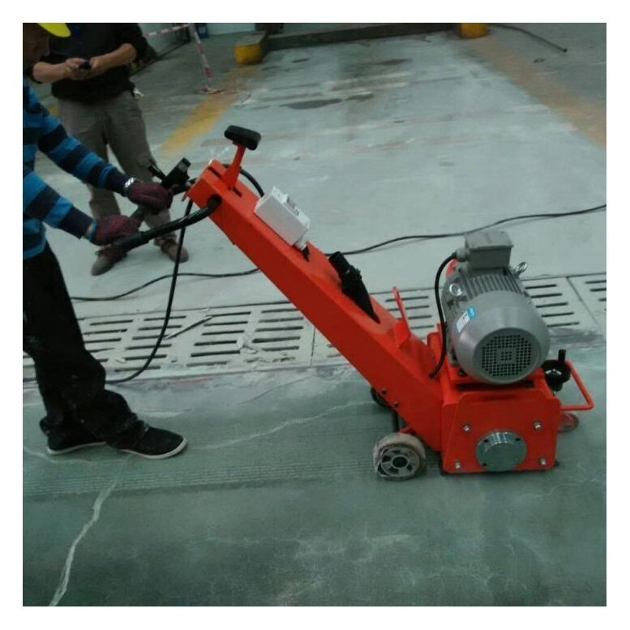

Start / Beton-, Boden- & Ausbautechnik / Autobetonpumpe ca. 38 m (Lkw-Betonpumpe)

Beton-, Boden- & Ausbautechnik
Autobetonpumpe ca. 38 m (Lkw-Betonpumpe)
Lkw-Betonpumpe mit 38,1 m vertikaler Reichweite und bis zu 160 m³/h Förderleistung für Hochbau und Ortbeton.
Mast ausfahren, abstützen, pumpen: Die Maschine ersetzt Kran-Kübel-Betrieb und spart Aufbauzeit auf der Baustelle. Gewerbliche Käufer erwarten ein EU-zulassungsfähiges Fahrgestell (Euro VI), CE-Konformität des Pumpenaufbaus, eine deutsche Betriebsanleitung sowie gesicherte Ersatzteil- und Serviceversorgung für Mast, Förderzylinder und Verschleißteile.
Technische Daten
| Vertikale Reichweite | 38,1 m |
|---|---|
| Horizontale Reichweite | 33,4 m |
| Förderleistung (theoretisch) | bis 160 m³/h |
| Gesamtgewicht | ca.; 26,8–27,7 t |
| Fahrgestell / Abgas | für EU-Neuzulassung Euro VI nötig |
| Zolltarifnummer (HS) | 87059030 |
EU-Normen und Vorschriften
2006/42/EC → (EU) 2023/1230Maschinenrichtlinie (CE-Konformität); ersetzt durch Maschinenverordnung, anwendbar ab 20.01.2027EN 12001Förder-, Spritz- und Verteilmaschinen für Beton und Mörtel – Sicherheitsanforderungen(EC) 595/2009 (Euro VI)Abgasstufe des Lkw-Fahrgestells; für Neuzulassung in der EU erforderlich(EU) 2018/858EU-Typgenehmigung bzw.; Einzelgenehmigung (COC) für die Straßenzulassung(EU) 2016/1628 (Stage V)Nur falls ein separater Pumpenmotor verbaut ist; Antrieb über den Fahrzeugmotor fällt unter Euro VI
Passt dazu
Weitere Produkte dieser Kategorie
Vorwärts-Rüttelplatte ca. 90 kg, Benzinmotor (ca. 5,5 PS)Robuste Vorwärts-Rüttelplatte zum Verdichten von Gräben, Pflaster- und Tragschichten sowie Asphaltflicken.
XPS-Dämmplatte 100 mm (ca. 1250 x 600 mm)Druckfeste extrudierte Polystyrol-Hartschaumplatte für Perimeter-, Sockel- und Bodendämmung.
Betonrüttler (Innenrüttler) mit Rüttelflasche, elektrisch 230 VElektrischer Innenrüttler mit Rüttelflasche zum Verdichten von Frischbeton in Wänden, Stützen und Decken.
Putzmaschine (Mörtelspritzmaschine), elektrisch 230/400 VFörder- und Spritzmaschine für Maschinenputz, Gips- und Kalkzementputz in Innen- und Außenbereichen.
Stahlrahmenschalung (Wandschalung), Element ca. 600 x 1200 mmWiederverwendbares Rahmenschalungselement für Wände, Stützen und Fundamente aus Ortbeton.
Aluminium-Fliesenprofil (Winkel-/Abschlussprofil), 2,5 mKantenschutz- und Abschlussprofil aus Aluminium für Fliesen- und Wandbeläge in Sanierung und Ausbau.
Reversierbare Rüttelplatte ca. 400 kg, Dieselmotor, hydraulischer Vor-/RücklaufSchwere reversierbare Rüttelplatte für Tragschichten, große Pflaster- und Hofflächen sowie tiefe Leitungsgräben.
Pflasterverlegemaschine, automatisch, für Betonpflaster in LagenverlegungMaschine zum schnellen und ebenen Verlegen von Pflaster- und Betonsteinen auf Splittbett für große Hof-, Straßen- und Platzflächen.
Bodenbelags-Entferner (Stripper), elektrisch, handgeführtElektrischer Stripper zum zügigen Entfernen von PVC-, Linoleum-, Teppich-, Kleber- und Fliesenbelägen bei der Sanierung.
Betonglätter (Flügelglätter), handgeführt, Benzinmotor, Ø ca. 900 mmHandgeführter Flügelglätter zum Glätten und Verdichten frisch eingebrachter Betonböden und Estriche.
Deckenschalung mit Stützen (Schalungsträger H20, Stahl-Deckenstützen, Gabelköpfe)Träger-Deckenschalung mit höhenverstellbaren Stahlstützen für Ortbetondecken im Hochbau und in der Sanierung.
Arbeitsbock / Gerüstbock aus Stahl, verzinkt, höhenverstellbar (je Stück)Belastbarer Stahlbock als Unterstützung für Arbeitsplattformen und Gerüstbohlen bei Putz-, Estrich- und Ausbauarbeiten.
Minikran / Mauerkran, Raupenfahrwerk (Spinnenkran-Bauart), Tragkraft ca. 500 kg, Reichweite ca. 8 mKompakter Minikran zum Heben von Mauersteinen, Fertigteilen, Fenstern und Platten auf engen Baustellen und in Gebäuden.
Mineralwolle-Dämmung (Steinwolle-Dämmplatte/Klemmfilz), 100 mm, WLG 035Nichtbrennbare Mineralwolle-Dämmung für Dach, Wand, Decke und Trockenbau mit Wärme-, Schall- und Brandschutz.
Fliesen-Nivelliersystem-Set (Zuglaschen, Keile, Zange)Zuglaschen-Keil-System mit Montagezange für planebene Fliesenverlegung bei Fugenbreiten von 1 bis 3 mm.
Verschleißteil-Set für Putzmaschine (Rotor/Stator D6-3, Spritzdüse)
Polyurethan-Schutzmatte für Rüttelplatten, verschraubbarVerschraubbare Schutzmatte aus gegossenem Polyurethan, die Pflaster und Platten beim Abrütteln vor Kratzern und Abdrücken schützt.
Ersatz-Rüttelflasche mit flexibler Welle für Innenrüttler (Ø 35/45 mm, 1,5–6 m)Rüttelflasche aus gehärtetem Stahl mit flexibler Welle und Schutzschlauch als Ersatzteil für elektrische Innenrüttler.
Betonmischer 140 l (230 V, 0,5 PS), Freifallmischer mit Stahltrommel
Betonmischanlage (stationär) ca. 60 m³/h
Steinformmaschine (Betonstein, Pflaster, Bordstein)Stationäre Betonsteinmaschine für Hohlblöcke, Pflaster, wasserdurchlässige Pflaster und Bordsteine bis 300 mm Höhe.
Alu-Abziehlatte, 2 m, H-ProfilLeichte Alu-Abziehlatte zum Abziehen von Estrich, Putz und Beton.

Manueller Fliesenschneider 1200 mmManueller Schienen-Fliesenschneider für große Formate bis 1200 mm Schnittlänge.

Elektrisches Airless-FarbspritzgerätElektrisches Hochdruck-Airless-Spritzgerät für Wand- und Deckenfarbe.
Betonglättkelle / Bull Float mit StielGroßflächen-Glätter zum Verdichten und Glätten frisch verteilten Betons.

Bodenfräse / Scarifier 250 mm, elektrischHandgeführte Fräse zum Entfernen von Beschichtungen, Epoxid und Markierungen auf Beton.
Tellermischer (Zwangsmischer) 350 l, elektrischVertikalwellen-Tellermischer für Mörtel, Beton und Estrich.
Kantenglätter (Edger) Edelstahl, gebogenHandwerkzeug zum Abrunden und Verdichten von Betonkanten.